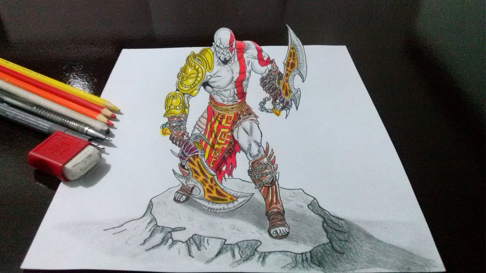

Steam é um Software de gestão de direitos digitais criado pela Valve (Nós =D!) para tentar combater a pirataria e fornecer serviços facilitados como atualização automática de jogos, e preços acessiveis aos usuários. Atualmente o Steam conta com aproximadamente 65 milhões de usuários ativos, e tem médias de acesso diário de 8,5 milhões de contas simultâneas. O nosso programa também conta com um sistema de amigos, que permite ao usuário criar uma rede de contatos online, com os quais pode jogar, trocar ítens, interagir no chat, transmitir ao vivo (gameplays) e mais.
siga-nos no Instagram! @Steam_official


 O desenvolvimento do sistema Steam teve início em uma data não revelada, anterior a 2002. Antes de "Steam", recebeu os codinomes "Grid" e "Gazelle". Foi anunciada ao público em 22 de março de 2002 na Game Developers Conference, e foi apresentada apenas como uma rede de distribuição. Para demonstrar a facilidade de integração do Steam a um jogo, a Relic Entertainment criou uma versão especial de Impossible Creatures. O jogo, no entanto, não foi lançado no sistema.
O aplicativo cliente, em versão 1.0, foi disponibilizado para download em 2002 durante o período de beta-teste de Counter-Strike 1.6. À época, foi visto como um método para simplificar o processo de atualização e correção de defeito comuns em jogos online de computador. A instalação e uso do Steam era obrigatório para os testadores do jogo, mas o Steam era um componente opcional para os demais jogadores. Em 2004, a rede de autenticação World Opponent Network (WON) foi desativada e substituída pelo Steam.
Na mesma época, a Valve começou a negociar contratos com diversas editoras e desenvolvedores independentes para lançarem seus jogos no Steam, em geral com um desconto de pré-compra de 10% do valor sugerido de venda. Dois exemplos recentes são Rag Doll Kung Fu e Darwinia, a editora canadense Strategy First anunciou em dezembro de 2005 uma parceria com a Valve para a distribuição eletrônica de títulos atuais e futuros.
Em 16 de novembro de 2004, Half-Life 2 foi lançado oficialmente. O jogo exigia sua ativação pelo Steam para ser jogado. Durante o dia do lançamento, um número significante de compradores (tanto pelo Steam quanto por lojas tradicionais) se viram incapacitados de jogar, em parte devido a lentidões no sistema Steam. Os servidores europeus de autenticação saíram do ar por cerca de cinco horas até serem consertados, impedindo usuários com contas neles armazenados de descriptografar o conteúdo e usufruir do jogo que haviam comprado.
Em 28 de janeiro de 2008 a Valve liberou o Steamworks, uma ferramenta gratuita de desenvolvimento e publicação que possibilitou o acesso de desenvolvedores a cada componente do Steam. Especialmente, o Steamworks fornece meios de integrar os jogos com o cliente Steam, incluindo rede e ferramenta de autenticação de jogadores para ambos servidor e jogos multiplayer peer-to-peer, mecanismos de criar partidas, suporte para amigos e grupos da comunidade Steam, estatísticas e proezas Steam, integração de comunicação de voz, e suporte para Steam Cloud.
Endereço
706-712 W Main St, Leesburg, FL 34748, EUA
e-mail: steampowered@valve.com
O desenvolvimento do sistema Steam teve início em uma data não revelada, anterior a 2002. Antes de "Steam", recebeu os codinomes "Grid" e "Gazelle". Foi anunciada ao público em 22 de março de 2002 na Game Developers Conference, e foi apresentada apenas como uma rede de distribuição. Para demonstrar a facilidade de integração do Steam a um jogo, a Relic Entertainment criou uma versão especial de Impossible Creatures. O jogo, no entanto, não foi lançado no sistema.
O aplicativo cliente, em versão 1.0, foi disponibilizado para download em 2002 durante o período de beta-teste de Counter-Strike 1.6. À época, foi visto como um método para simplificar o processo de atualização e correção de defeito comuns em jogos online de computador. A instalação e uso do Steam era obrigatório para os testadores do jogo, mas o Steam era um componente opcional para os demais jogadores. Em 2004, a rede de autenticação World Opponent Network (WON) foi desativada e substituída pelo Steam.
Na mesma época, a Valve começou a negociar contratos com diversas editoras e desenvolvedores independentes para lançarem seus jogos no Steam, em geral com um desconto de pré-compra de 10% do valor sugerido de venda. Dois exemplos recentes são Rag Doll Kung Fu e Darwinia, a editora canadense Strategy First anunciou em dezembro de 2005 uma parceria com a Valve para a distribuição eletrônica de títulos atuais e futuros.
Em 16 de novembro de 2004, Half-Life 2 foi lançado oficialmente. O jogo exigia sua ativação pelo Steam para ser jogado. Durante o dia do lançamento, um número significante de compradores (tanto pelo Steam quanto por lojas tradicionais) se viram incapacitados de jogar, em parte devido a lentidões no sistema Steam. Os servidores europeus de autenticação saíram do ar por cerca de cinco horas até serem consertados, impedindo usuários com contas neles armazenados de descriptografar o conteúdo e usufruir do jogo que haviam comprado.
Em 28 de janeiro de 2008 a Valve liberou o Steamworks, uma ferramenta gratuita de desenvolvimento e publicação que possibilitou o acesso de desenvolvedores a cada componente do Steam. Especialmente, o Steamworks fornece meios de integrar os jogos com o cliente Steam, incluindo rede e ferramenta de autenticação de jogadores para ambos servidor e jogos multiplayer peer-to-peer, mecanismos de criar partidas, suporte para amigos e grupos da comunidade Steam, estatísticas e proezas Steam, integração de comunicação de voz, e suporte para Steam Cloud.
Endereço
706-712 W Main St, Leesburg, FL 34748, EUA
e-mail: steampowered@valve.com